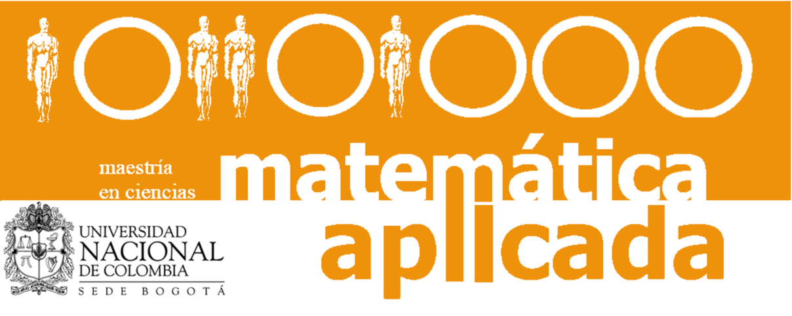
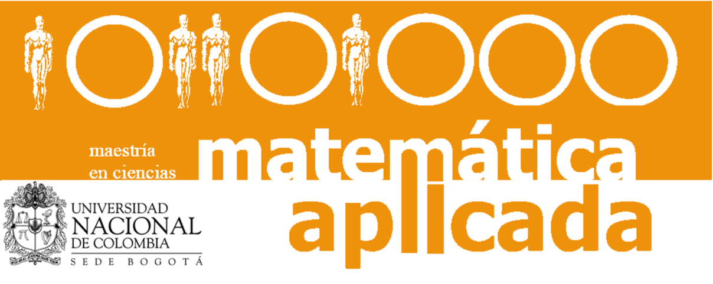
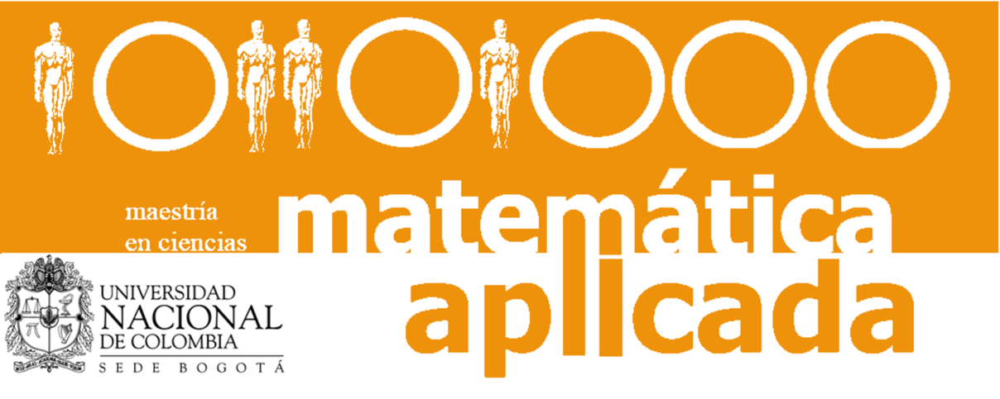

.png) 

Workshop de Matemáticas Aplicadas
Encuentro de Egresados de la Maestría en Matemática Aplicada
13 y 14 de Noviembre, 2024 | Salón 201 - Edificio 404 Yu Takeuchi

13 y 14 de Noviembre, 2024 | Salón 201 - Edificio 404 Yu Takeuchi
El Workshop de Matemáticas Aplicadas y Encuentro de Egresados reúne a estudiantes, investigadores, profesionales y egresados del programa de Maestría en Matemática Aplicada de la Universidad Nacional de Colombia para fomentar la creación de redes de colaboración entre la comunidad académica y profesionales en el campo de las matemáticas aplicadas.
Fomentar la creación de redes de colaboración entre la comunidad académica y profesionales en el campo de las matemáticas aplicadas.
Fechas:
13 y 14 de Noviembre, 2024
Lugar:
Salón 201
Edificio 404 Yu Takeuchi
Universidad Nacional de Colombia
Sede Bogotá
Costo:
Entrada Gratuita
Modalidad:
Presencial
| Hora | Actividad | Expositor |
|---|---|---|
| 7:30 - 8:15 | Quantum graph learning: Frontiers and Outlook | Diego Gerardo Roldan |
| 8:20 - 8:50 | Café | |
| 9:00 - 9:45 | TBD | Jeisson Prieto |
| 10:00 - 10:45 | "Propiedades de la palabra de Fibonacci y de sus factores" | Juan Triana |
| 10:45 - 11:15 | Receso | |
| 11:45 - 12:30 | Sistemas Organ-on-a-Chip para el Estudio del Cáncer: Fabricación, Modelado Computacional y Ensayos con Fármacos Antitumorales | Andres Gonzalez |
| 12:30 - 13:15 | Estimating the output gap after COVID: How to address unprecedented macroeconomic variations | Daniel Parra |
| Hora | Actividad | Expositor |
|---|---|---|
| 8:20 - 8:50 | Café | |
| 9:00 - 9:45 | Generalization of Hoedding decomposition under dependence | Fabrice Gamboa |
| 10:00 - 10:45 | De matemáticas y desastres | Mario Yandar |
| 10:45 - 11:15 | Receso | |
| 11:45 - 12:30 | Solución Numérica del Modelo FitzHugh-Nagumo En Medios Heterogéneos | Juan Hernandez |
| 12:30 - 13:15 | On the estimation of the parameters of Gaussian processes | Agnes Lagnoux |
Charla: Quantum graph learning: Frontiers and Outlook
Charla: TBD
Charla: "Propiedades de la palabra de Fibonacci y de sus factores"
Charla: Sistemas Organ-on-a-Chip para el Estudio del Cáncer
Charla: Estimating the output gap after COVID
Charla: Generalization of Hoedding decomposition under dependence
Charla: De matemáticas y desastres
Charla: Solución Numérica del Modelo FitzHugh-Nagumo
Charla: On the estimation of the parameters of Gaussian processes
El Workshop de Matemáticas Aplicadas y Encuentro de Egresados es un evento gratuito abierto a toda la comunidad académica y profesional interesada en las matemáticas aplicadas.
Salón 201
Edificio 404 Yu Takeuchi
Universidad Nacional de Colombia
Sede Bogotá
Cra 45 # 26-85
13 de Noviembre: 7:30 - 13:15
14 de Noviembre: 8:20 - 13:15
📧 Email: dgroldanj@unal.edu.co
🏛️ Departamento de Matemáticas
Universidad Nacional de Colombia
Sede Bogotá
Maestría en Ciencias - Matemática Aplicada
Departamento de Matemáticas
Universidad Nacional de Colombia
Sede Bogotá